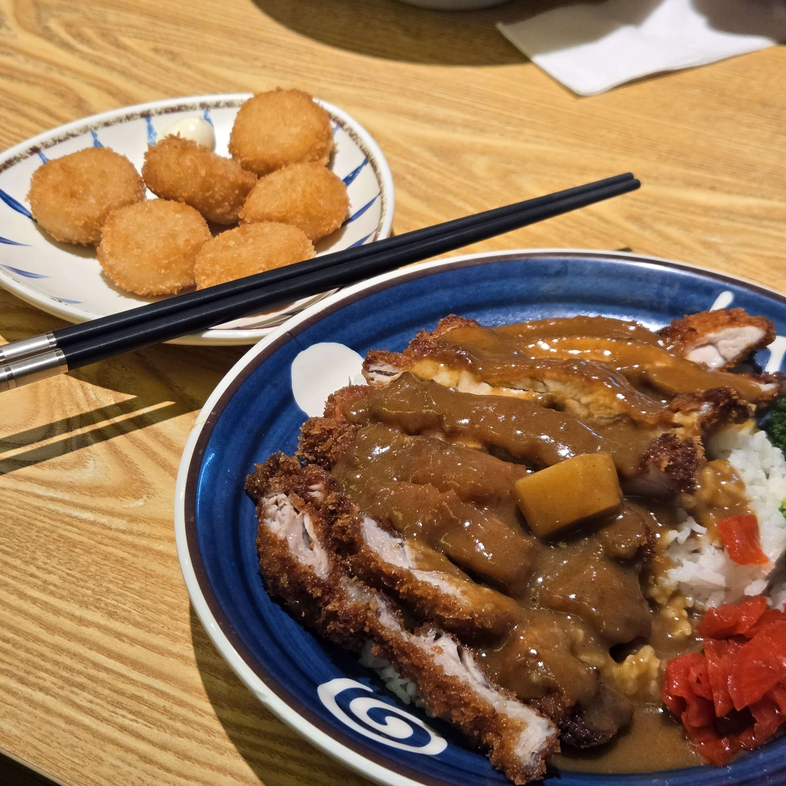

Food I've Found!

Welcome to the Food Page!
I don’t go out to eat very much, as I mostly eat home-cooked meals; could be something simple like noodles when it’s just me or could include a variety of dishes when it’s with family. But when I do eat out, it would be somewhere either nearby to my university, or in the city where I go to work.
Isshin Ramen Bar
Isshin Ramen Bar is a small Japanese restaurant across the road from Melbourne central that I have gone to eat at with friends and also for dinner after work.
Not only do they have lots of tasty options to choose from, they also have good prices and deals, which include a daily special deal where the featured bowl of the day is discounted.
This restaurant is a great option for lunch or dinner, serving a tasty and filling meal that is also friendly to the wallet.
And since it’s right outside Melbourne Central, it’s located very conveniently for people who don’t drive everywhere (like me!).
About the Picture
The above image is of a curry katsu don that I had at Isshin Ramen Bar, which is one of my favourite dishes. It's what I had for dinner on the day I took it, right after work.